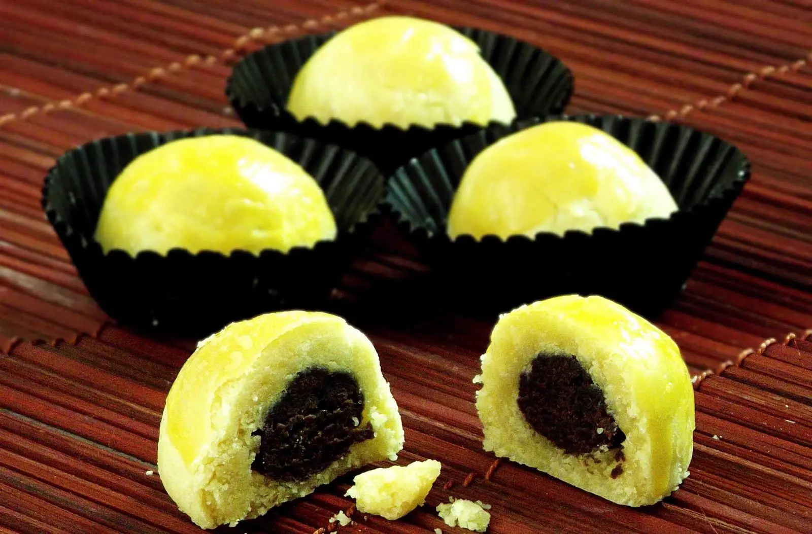

Resep kue kering Nastar Keju Coklat

Bahan-Bahan:
- 125 gram butter
- 125 gram margarin
- 50 gram gula halus
- 2 butir kuning telur
- 2 sdm susu bubuk
- 350 tepung kunci
Olesan:
- 2 butir kuning telur
- 2 sdm minyak goreng
- 2 sdm skm
Isian:
- Coklat batangan yang telah dipotong kecil-kecil
- Keju parut secupnya
Langkah-Langkah:
- Langkah 1 :
- Mixer kuning telur, butter, margarin dan gula halus.
- Langkah 2 :
- Masukan tepung dan susu bubuk pada adonan yang telah di mixer tadi. Aduk dengan spatula sampai tercampur rata.
- Langkah 3 :
- Ambil adonan secukupnya saja isi dengan coklat dan keju, buat bentuk bulat-bulat.. Lakukan step tersebut smpai adonan habis.
- Langkah 4 :
- Tata nastar pada loyang yang telah di lapisi margarin. Olesi nastar dengan bahan olesan. Cara membuat olesan tinggal campur smua bahan dan aduk rata
- Langkah 5 :
- Panggang dengan suhu 170°c selama 30 menit. Jika telah matang keluarkan dan angin-anginkan agar dingin. Setelah dingin simpan pada wadah yang kedap udara.